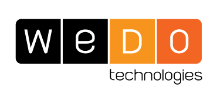
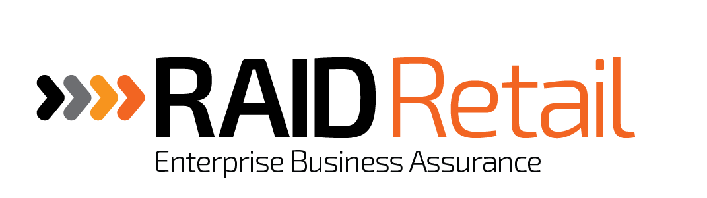
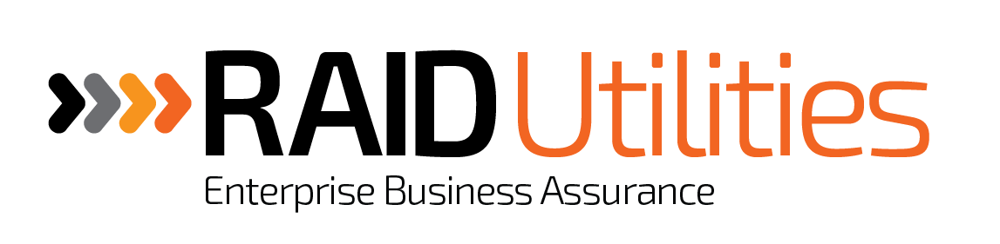

Gestão do Processo de Software
Trabalho Teorico
- Miguel Vieira
- Luis Brito
- Paulo Cardoso
- Xavier Fernandes

Contextualização WeDo
O produto da WeDo


Os representantes da entrevista
- Senior Product Architect - Pedro Santos
- Director of Product Development - Raul Azevedo
- Head of Product Architecture - Ricardo Marques
Processo de desenvolvimento de software e Metodologia de gestão
Como funciona o desenvolvimento na WeDO
Vantagens e Desvantagens da metodologia
Avaliação dos projetos e seus critérios